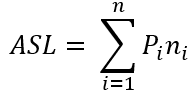
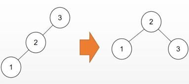

2020-8-15
86
数据结构--查找算法
查找
查找表：一种以集合为逻辑结构，以查找为核心运算，同时包括其它运算的数据结构。

张三
good
一、平均查找长度
二、顺序查找方法
用待查关键码key依次和查找表元素的关键码进行比较，若找到相等的元素，就称为查找成功，假设把整个查找表找完都没有找到给定关键码相等的元素，则查找失败。
回顾顺序表的表示
typedef struct{
ElementType *R; //表的首地址
int length; //表长
}SSTable;
顺序表的查找
j = 1;
n = S.length;
while(j<=n&&k != S.R[j].key){
j++;
if(j<=n&&k==S.R[j].key)
return(j);
else
return(0);
}
加一个监视哨的查找（多一次）：
int search(SSTable S, keyType k)
{
j=S.length;S.R[0].key = k;
while(k!=S.R[j].key)
j--;
return(j);
}
顺序查找的特点：
（1）算法简单、对查找表的结点之间没有排序要求，对表的存储结构也无任何要求（顺序和链式）
（2）N很大时查找效率低，与n成反比、平均约为n/2；
（3）改进措施：非等概率查找，可按照查找概率进行排序；
三、折半查找的办法
用待查关键字k与线性表中间位置的关键字进行比较：
(1)若相等，则查找成功。
(2)若不相等，则根据比较的结果确定下一步操作；
若k小于中间结点的关键字，则对前半个子表进行查找；
若k大于中间结点的关键字，则对后半个子表进行查找。
(3)若整张表都没有找到满足条件的结点，则查找失败。
折半查找算法：
int search(SSTable S,KeyType k)
{
low = 1;
high = S.length;
while(low<=high){
mid = (low + high)/2;
if(key== S.R[mid].key){
return mid;
}else if(key < S.R[mid].key){
high = mid-1;
}
else
low = mid +1;
}
}
折半查找的性能分析
查找成功：每次将查找记录所在区间缩小一半，比顺序查找效率高，时间复杂度O(log2 n)。
适用条件：采用顺序存储结构的有序表，不适用于链式结构。
四、二叉排序树
二叉排序树或是空树，或是满足如下性质的二叉树：
（1）若其左子树非空，则左子树上所有结点的值均小于根节点的值；
（2）若其右子树非空，则右子树上所有结点的值均大于等于根节点的值；
（3）其左右子树本身又各是一颗二叉排序树。
Tips:中序遍历二叉排序树得到的是一个从小到大的有序序列。
二叉排序树表示：二叉链表
typedef struct BiTNode{
TElemType data; //结点数据域;
struct BitNode *Ichild,*rchild; //左右孩子指针;
}BiTNode,*BiTree;’
二叉排序树的查找算法伪代码：
BiTree search6(BiTree bt, keytype k){
if(bt == NULL) return NULL;
if(相等k==bt->data.key){
return (bt);
}
else if k较大(k->bt->data.key)
return (search6(bt->lch,k));
else k较小
return (search6(bt->lch,k));
}
4.1 二叉排序树的操作-插入
（1）若二叉排序树为空，则插入结点应为根节点;否则，继续在其左、右子树上查找
（2）若树中已有此节点，不再插入；树中没有，查找直至某个叶子结点的左子树或右子树为空为止，则插入结点应为该叶子节点的左孩子或右孩子。
4.2 二叉排序树的操作-生成
将序列依次插入空的二叉排序树中，每一次插入的结点都首先要和根节点比较，大于根节点，和其右子树比较，插入；小于根节点，和其左子树比较，插入。
4.3 二叉排序树的操作-删除
（1） 如果删除的是叶节点：直接删除，再修改其父节点指针置为空NULL。
（2） 要删除的结点只有一个孩子结点：将其父节点的指针指向要删除结点的孩子结点。
（3） 如果要删除的结点有左、右两颗子树：用另一个结点替代被删除结点（左子树的最大元素或者右子树的最小元素）。
删除算法：
BiTree Delete(ElementType x,BiTree bt)
{
if(x < bt->data){
bt->lch = Delete(x,bt->lch); //递归左子树
}else if{
bt->rch = Delete(x,bt->rch); //递归右子树
}else{
if(bt->lch&&bt->rch) //被删子树有左右子结点
{
tmp = FindMin(bt->rch);
bt->data = tmp->data;
bt->rch = Delete(bt->data,bt->rch);
}
else{
tmp = bt;
if(!bt->lch)
bt = bt->rch;
else if(!bt->rch)
bt = bt->lch;
free(tmp);
}
}
}
五、AVL树
任意结点的平衡因子只取-1，0，1的二叉排序树，叫做平衡二叉树；对于一颗含有n个结点的AVL树，其高度保持在O（log2 n）的数量级
5.1 创建AVL
（1） 插入新结点的时候，按照二叉排序树来进行处理；
（2） 若插入的结点破坏了AVL的特性，需要调整； 调整AVL的方法：找到离插入节点最近且平衡因子绝对值超过1的祖先结点，以该节点为根的子树称为最小不平衡子树，可将重新平衡的范围局限于此子树。
5.2 调整AVL
（1）RR平衡旋转
若在A的右子树的右子树上插入结点，使A的平衡因子从-1增加至2，只需进行一次逆时针选择。
（2）LL平衡旋转
若在A的左子树的左子树上插入结点，使A的平衡因子从-1增加至2，只需进行一次逆时针选择。
（3）LR平衡旋转
先将左子树左旋，再整体右旋
（4）RL平衡旋转
先将右子树左旋，再整体左旋
顺序查找、折半查找、二叉排序树查找共同特点：
（1） 需要经过一系列的比较来确定关键字key的记录在表中的地址；
（2） 平均查找程度都不为0；
（3） 不同查找方法尽在关键字和给定值进行比较的顺序不同
六、哈希表
哈希表定义：哈希表是一种根据关键码去寻找值的数据映射结构，该结构通过把关键码映射的位置去寻找存放值的地方。我们使用一个下标范围比较大的数组来存储元素。可以设计一个函数（哈希函数，也叫做散列函数），使得每个元素的关键字都与一个函数值（即数组下标）相对应，于是用这个数组单元来存储这个元素；也可以简单的理解为，按照关键字为每一个元素"分类"，然后将这个元素存储在相应"类"所对应的地方。但是，不能够保证每个元素的关键字与函数值是一一对应的，因此极有可能出现对于不同的元素，却计算出了相同的函数值，这样就产生了"冲突"，换句话说，就是把不同的元素分在了相同的"类"之中。
6.1哈希冲突
在这里举一个查字典的例子：如果想要获取“按”字详细信息，根据拼音去查an在字典的位置，查了一下得到“安“，过程就是键码映射，但是问题来了，我们要查的是“按”，而不是“安，但是他们的拼音都是一样的。也就是通过关键字”按“和关键字”安“可以映射到一样的字典页码4的位置，这就是哈希冲突（也叫哈希碰撞）。
哈希冲突解决方法：6.1.1 开发定址法
开发地址法的做法是，当冲突发生时，使用某种探测算法在散列表中寻找下一个空的散列地址，只要散列表足够大，空的散列地址总能找到。按照探测序列的方法，一般将开放地址法区分为线性探查法、二次探查法、双重散列法等。
我们用以一个模8的哈希表为例，采用除留余数法，往表中插入三个关键字分别为26，35，36的记录，分别除8取模后，在表中的位置如下：
这个时候插入元素42，那么正常应该在地址为2的位置里，但因为关键字30已经占据了位置，所以就需要解决这个地址冲突的情况，接下来就介绍三种探测方法的原理，并展示效果图。
（1）线性探查法
fi=(f(key)+i) ％ m ，0 ≤ i ≤ m-1
探查时从地址 d 开始，首先探查 T[d]，然后依次探查 T[d+1]，…，直到 T[m-1]，此后又循环到 T[0]，T[1]，…，直到探查到有空余的地址或者到 T[d-1]为止。
插入42时，探查到地址2的位置已经被占据，接着下一个地址3，地址4，直到空位置的地址5，所以39应放入地址为5的位置。
缺点：需要不断处理冲突，无论是存入还是査找效率都会大大降低。
下面为算法程序
int FindHash(SeqList* pL, KeyType K)
{
int c=0; int p=Hash(K); /*求得哈希地址*/
while(pL->data[p].key!=NULL_KEY && K!=pL->data[p].key && ++cdata[p].key) {
printf("\n成功找到 %d", K);
return p; /*查找成功,p返回待查数据元素下标*/
}
else if(pL->data[p].key==NULL_KEY) {
printf("\n无法找到 %d , 在位置 %d 插入。", K,p);
pL->data[p].key = K; pL->n++;
return p;
} else {
printf("\n无法找到 %d , 表已满。", K);
return -1;
}
}
（2）二次探查法
fi=(f(key)+di) ％ m，0 ≤ i ≤ m-1
探查时从地址 d 开始，首先探查 T[d]，然后依次探查 T[d+di]，di 为增量序列12，-12，22，-22，……，q2，-q2 且q≤1/2 (m-1) ,直到探查到 有空余地址或者到 T[d-1]为止。
所以插入42时，探查到地址2被占据，就会探查T[2+1^2]也就是地址3的位置，被占据后接着探查到地址7，然后插入。
缺点：无法探查到整个散列空间。
（3）双哈希函数探测法
fi=(f(key)+i*g(key)) % m (i=1，2，……，m-1)
双哈希函数探测法，先用第一个函数 f(key) 对关键码计算哈希地址，一旦产生地址冲突，再用第二个函数 g(key) 确定移动的步长因子，最后通过步长因子序列由探测函数寻找空的哈希地址。
6.1.2 链地址法（拉链法）
链地址法的原理时如果遇到冲突，他就会在原地址新建一个空间，然后以链表结点的形式插入到该空间。
例如有一堆数据{1,12,26,337,353...}，哈希算法是H(key)=key mod 16，第一个数据1的哈希值f(1)=1，插入到1结点的后面，第二个数据12的哈希值f(12)=12，插入到12结点，第三个数据26的哈希值f(26)=10，插入到10结点后面，第4个数据337，计算得到哈希值是1，遇到冲突，但是依然只需要找到该1结点的最后链结点插入即可，同理353。

Comments
回复